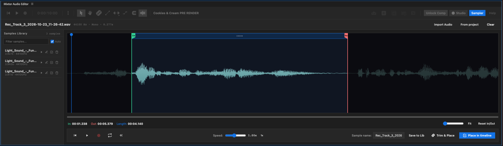

Mixtor Audio Editor - Version 1.0
The first complete, fast, and intuitive digital audio workstation (DAW) embedded natively inside Adobe After Effects.
Created by Pedro Justiniano - RojusLabs
With special thanks to my friend Daian Gan
Compatibility: Adobe After Effects 2022 to 2026+ (macOS & Windows)
Copyright © 2026 RojusLabs. All Rights Reserved.
1. WELCOME & 1-CLICK NATIVE INSTALLATION
1.1 WHAT IS MIXTOR?
Mixtor is the first complete, fast, and intuitive digital audio workstation (DAW) built specifically to live inside Adobe After Effects.
If you are a motion designer, video editor, or compositor, you know the historic frustration of working with audio inside After Effects: the lack of a proper blade tool, clumsy keyframing, no visual fade handles, and sluggish RAM-preview waits just to check if an edit hits on the right frame; in short, you simply don’t do audio inside After Effects.
Well, now Mixtor turns After Effects into a cutting-edge sound studio. It gives you razor-sharp cut tools (C), instant visual fades (F), multi-node volume and pan automation curves (A), visual UIs for effects (EQ, Compression, Reverb, Delay), and an integrated Foley Sampler to design and drop sound effects easier than ever.
(Mixtor is not a standalone DAW so it will rely on what AE is capable of doing, making the most of its native capabilities).
1.2 macOS INSTALLATION (.PKG 1-CLICK INSTALLER)
Installation on macOS is 100% native, signed, and automatic:
1.3 WINDOWS INSTALLATION (.EXE 1-CLICK INSTALLER)
Installation on Windows 10 and Windows 11 is equally simple and fully automated.
Steps:
1.4 HOW TO OPEN MIXTOR.
1.5 PERMISSIONS
Go to After Effects > Settings > Scripting & Expressions and make sure that the Allow Scripts to Write Files and Access Network check box is toggled on.
1.6 OPERATING SYSTEM MICROPHONE PERMISSIONS
If you plan to use Mixtor's real-time voiceover or Foley recording features:
- On macOS: The first time you press the Record button (R), macOS will display a security dialog asking to allow After Effects to access your microphone. Click "Allow". If you ever denied it in the past, open System Settings > Privacy & Security > Microphone and ensure Adobe After Effects is enabled.
- On Windows: Open Windows Settings > Privacy > Microphone and confirm that desktop apps have permission to access your audio hardware.
2. QUICK START
2.1 THE GOLDEN RULE: AN ACTIVE COMPOSITION MUST BE OPEN & SELECTED

Mixtor works in real-time bidirectional synchronization with After Effects. To draw waveforms, calculate time, and create audio tracks, Mixtor REQUIRES that you have a composition open and active in your project.
- If no composition is open, Mixtor's header will display "— No Comp —" and the timeline will wait in standby mode.
- As soon as you open or click into a composition, Mixtor instantly detects its name, duration, and frame rate (FPS), aligning its timecode ruler seamlessly.
2.2 IMPORTING AUDIO: DRAG & DROP SIMPLICITY
Starting a project is as fluid as modern video editing: You can drag and drop your audio files from your project’s panel onto Mixtor's multitrack timeline area or directly from the Finder or Windows File Explorer. Mixtor automatically creates the required audio tracks, generates visual waveforms, and places the clips where you dropped them.
Alternatively, you can click the Import folder icon in the top toolbar to browse for audio files using your operating system's file chooser.
2.3 AUTOMATIC DETECTION OF EXISTING AUDIO LAYERS
If you open an existing composition that already has audio layers or video files with embedded sound tracks, Mixtor automatically scans the active composition and maps each audio layer to a dedicated track lane. Any cuts, level changes, or volume automations made in Mixtor reflect directly on After Effects layers.
2.4 LOCK TO COMPOSITION ("LOCK TO COMP")
In complex motion design projects featuring dozens of nested precomps, clicking
a graphic layer can cause After Effects to switch the active view. To prevent Mixtor from accidentally switching compositions while you are mixing sound: there is a Lock to Comp button in the top right header, toggled on by default.
When highlighted, Mixtor stays permanently locked to your selected composition, allowing you to navigate and edit visual precomps freely without losing your audio mix focus.
Click it again whenever you want to switch Mixtor to a different composition.
WARNING
When Mixtor is linked to a composition it will create a new hidden Null object responsible for handling the Master volume for your mix. It will also create new Null objects for every new audio track. So if you turn off your global Shy button and find all those Null objects please do not move them, manipulate them directly, lock them or delete them. Simply leave them alone and everything will be fine.
3. FULL INTERFACE TOUR

Mixtor's interface has been crafted for clean readability, eliminating visual clutter while putting critical audio controls at your fingertips:
3.1 TOP HEADER TOOLBAR

From left to right, the header provides:
- Transport Controls: Go to Beginning, Play/Pause, and Record Audio.
-Timecode Display: Real-time playhead position in standard Hours:Minutes:Seconds:Frames format (0:00:00:00).
- Options Menu (...): Global project-level utility and maintenance tools.
- Editing Toolbox: Pointer (V), Hand (H), Fades (F), Trim Suite (Rolling Edit / Slip / Flex Trim), Automation Mode (A), and Grid Snapping (S).
- Waveform Toggle & Waveform Zoom (Ctrl / Right + Click).
- Active Composition Name Display.
- Action Buttons: Import Audio, Add Empty Track Lane, Duplicate Track, Stack Tracks (Folder), and Precompose Selected Tracks.
- Mode Selectors: Lock to Comp, Studio Mode, Sampler Mode, and Help Dialog.
3.2 TRANSPORT CONTROLS & TIMECODE DISPLAY

- Go to Beginning (Prev): Snaps the playhead instantly to frame 0.
- Play / Pause: Starts or stops audio playback, synchronized with the Spacebar.
- Record (R): Launches live microphone recording (detailed in Section 4).
3.3 TRACK HEADERS & CHANNEL STRIPS

To the left of each timeline lane sits the channel strip header:
- Track Name: Double-click to rename any track (e.g., "Dialog", "Music", "SFX").
- Mute (M): Instantly silences the track.
- Solo (S): Isolates the track, silencing all other tracks in the mix.
- Record Arm: Sets the track as the target destination for incoming audio.
- Volume Fader: Precision horizontal slider ranging from -48 dB to +12 dB. Double-click the fader slider to reset it to exactly 0.0 dB unity gain.
- Stereo Pan Knob: Rotary dial to pan audio between Left and Right. Alt + Click to reset. (If there are automation nodes the Pan Knob will be blocked)
- Effects Rack (+ FX): Dropdown to insert native AE audio effects.
- Applied Effects Badges: Visual badges showing active plugins; click any badge to open its dedicated parameter editor.
(Due to limitations on the Mixtor’s architecture vs the way AE handles the audio effects, you can add only one instance of each effect per channel; so if you need to add another one you should do it directly to the audio layer)
3.4 MASTER TRACK & OUTPUT FADER
Located at the top left above individual track headers, controls the overall output gain for the entire composition mix. It also features a Master Volume Automation Lane, allowing global fade-ins and fade-outs across the whole project.
3.5 MULTITRACK TIMELINE CANVAS & PLAYHEAD
The central creative canvas:
- Timecode Ruler: Displays seconds, sub-seconds, and frames. Click or scrub along the ruler to move the playhead smoothly. You can also turn on audio scrub by dragging the playhead while pressing Control or Command (just like in the regular timeline).
- Playhead Line: High-visibility playhead indicating the exact acoustic position.
- Track Lanes: Horizontal rows hosting audio clips.
- Audio Clips: Colorful, high-contrast blocks displaying acoustic waveform peaks, clip names, current gain, and interactive fade and trim handles.
3.6 SCROLLBARS & NAVIGATION ZOOM CONTROLS
- Horizontal Zoom: Press J to zoom in and G to zoom out centered on your cursor, or drag the blue dots on the bottom scroll bar.
- Horizontal Scrubbing: Drag the bottom scrollbar or use the Hand Tool (H); you can also use the mouse wheel while pressing Shift.
- Vertical Zoom: Drag the blue dots on the left side scroll bar to expand or collapse track heights to view expansive waveforms or condense dozens of lanes into a compact mixer view.
4. REAL-TIME AUDIO RECORDING SUITE
Mixtor incorporates a professional audio capture engine, ideal for Foley and even voiceovers recording directly into your comp.
4.1 THE RECORD BUTTON (TRANSPORT / R KEY)
Before you start recording, make sure you have a track selected and armed. Simply select your desired track and arm it by clicking on the little red dot button in your track header.
In the top transport section, locate the red circular Record button. Clicking it immediately begins audio capture from the current playhead position. Press Record again or hit the Spacebar to stop.
The recorded audio appears instantly on your timeline as an uncompressed, high-fidelity broadcast .wav clip.
Right-Click the Record Button: Instantly opens the Audio Recording Settings window.
(The recorded tracks will be stored as clips in a dedicated folder in your project panel, and in your disk besides your project).
4.2 PRE RECORD COUNTDOWN
Starting to speak the millisecond you hit record can feel rushed. Mixtor solves this with an intelligent Pre Record Count system: When enabled, pressing Record triggers a flashing red badge: "REC IN: 2.0s" (or your chosen countdown duration) and then start recording. You can change the preferred time in the Audio Recording Settings sections, by right-clicking on the Rec button.
4.3 AUDIO RECORDING SETTINGS WINDOW

Open this dialog by right-clicking the Record button or navigating to the Options
Menu (...) > "Recording Settings":
4.3.1 Audio Input Device & Quick Refresh
- Select your preferred audio interface or built-in laptop mic.
- Refresh Button (↻ Refresh): Plugged in your mic after opening After Effects?
Click Refresh to detect new hardware immediately without restarting.
You can then select the desired input channel, depending on what is available on your audio interface.
4.3.2 Live Input Signal Level VU Meter
- A responsive dB meter displaying incoming audio levels before you record.
- Test your mic: speak at your natural volume and ensure the bar bounces inside the green and yellow zones, avoiding the red ceiling.
4.3.3 Recordings Destination Folder
- Displays the exact file system directory where captured `.wav` files are saved.
- "Browse...": Choose a project-specific recordings folder on your drive.
- Folder Icon: Opens the destination directory in macOS Finder or Windows Explorer.
4.3.4 Broadcast Sample Rate
Mixtor records at the default’s 48,000 Hz (48 kHz / 24-bit PCM) project sample rate. To change it you have to do it through the project’s settings, since AE does not allow changing the sample rate via scripts or extensions.
4.3.5 Headphone Input Monitoring
When enabled, you hear your live microphone feed through your speakers or headphones in real time.
(Remember to keep your mic far from your speakers and avoid to point directly to them to prevent feedback loops… or just use headphones).
4.3.6 Multi-Track Recording Mode
When toggled on, Mixtor allows recording multiple armed tracks simultaneously when using multi-channel audio hardware.
5. TIMELINE EDITING TOOLS SUITE
Mixtor features an agile, modern editing toolbox designed to match professional creative workflows:
5.1 POINTER / SELECTION TOOL (V)

Your everyday tool. Click to select clips or drag a marquee box across multiple clips. Drag clips horizontally to adjust timing, or vertically to move them across tracks. Alt + Drag to clone your clips. Hover near the bottom-left or bottom-right edges of any clip: the cursor transforms into trim arrows, allowing you to lengthen or shorten the clip boundaries non-destructively.
5.2 HAND TOOL (H)

Click and drag anywhere on the timeline to pan smoothly across long projects without risk of moving clips by accident. Just like in AE.
5.3 RAZOR TOOL (K)

The classic razor blade tool: click anywhere on an audio clip to split it cleanly into two independent clips. When clips are selected under the playhead, press C on your keyboard to perform a surgical cut exactly at the playhead line.
5.4 FADES TOOL (F)

Activating the Fades Tool reveals bright fade handles in the top corners of every clip. Drag the left handle inward to create a smooth Fade-In. Drag the right handle inward to create a smooth Fade-Out.
5.5 TRIMMING TOOLS DROPDOWN (T)

Located next to the Fades Tool, this dropdown houses three trimming tools, that you can either select by clicking and holding until the dropdown opens, or clicking on the button until the right trimming tool appears, or simply hit on T to switch between the three tools:
5.5.1 Rolling Edit Tool

Place your cursor on the cut boundary between two adjacent clips. Dragging rolls the cut point: it lengthens one clip while simultaneously shortening the other by the exact same amount, keeping total timeline duration unchanged.
5.5.2 Slip Tool

Shifts the underlying audio content inside a clip while keeping its in-point, out-point, and timeline duration completely fixed. Essential for syncing a punch sound effect or a vocal phrase to on-screen video action without disturbing surrounding clips.
5.5.3 Flex Trim / Time Stretch Tool

Drag the boundary of an audio clip to stretch or compress its duration visually on the timeline. Mixtor automatically recalculates the playback speed in After Effects, letting you stretch a whoosh or riser to hit an exact visual milestone.
5.6 AUTOMATION MODE (A)


Automation Mode, displays volume and pan envelope lines across all clips and tracks. Click anywhere on the line to add control nodes (keyframe points). Drag nodes up or down on the green line to automate volume changes over time, or to automate panning on the orange line.
Right click on a selected node to add Ease or Delete it. You can reset automations by selecting one of the functions in the track options of the track’s playhead: Reset Volume Automations, Reset Pan Automations or Reset all automations.
5.7 MAGNETIC GRID SNAPPING (S)

Toggles magnetic snapping on or off. When active, dragged clips snap with sub-frame precision to the boundaries of adjacent clips, the playhead line, project markers, and ruler grid marks.
5.8 WAVEFORM / VISUAL ZOOM


Click the Waveform button in the top toolbar to toggle waveforms on or off for maximum rendering speed in massive projects.
Right-Click or Ctrl-Click the Waveform button: Opens a floating "Wave Zoom" slider (1.0x to 10.0x). This amplifies the visual height of waveforms without changing actual audio volume or gain. It is invaluable for visually identifying quiet vocal breaths or subtle Foley that would otherwise look like a flat line.
Double-click the zoom label to reset back to 1.0x.
6. ACTION BUTTONS

At the right of the top header tool bar there are the action buttons featuring basic operative functions such as:
6.1 IMPORT AUDIO FILE

Allows you to import audio files directly form your disk.
6.2 ADD EMPTY TRACK LANE

Creates a brand new clean timeline to place your new clips, move from another track or record new sounds.
6.3 DUPLICATE TRACK

Creates an exact copy of a selected track, group of tracks or folder tracks with all its content.
6.4 STACK TRACK

Creates a folder with the selected tracks, ideal for organizing your timeline. When a folder is selected, the Stack Track button turns red, featuring the function of Un-stacking your folder, which deletes the folder releasing all your tracks free.

6.5 PRECOMPOSE SELECTED TRACKS

Creates a precomposition to wrap all your audio tracks. Ideal for cleaning up your timeline once sound design is locked.
7. THE OPTIONS MENU 

Clicking the three vertical dots (...) in the top toolbar opens the Master Options
Menu, providing fast access to global utilities:
7.1 GLOBAL SELECTION
Click on Select All Tracks to instantly highlight and select all track lanes in the composition. Click on Deselect All to clear all active selections, deselecting every track and clips.
7.2 BOUNCE SELECTED TRACK...
Opens the Track Bouncing dialog. Renders all clips on the chosen track, along with their active channel effects and volume automations, consolidating them into a single continuous audio file. You can choose to replace the original track or place the bounce on a new track. You can also choose to bounce the clip including automations and effects. This is particularly useful since AE Audio Effects tend to be kind of processor-intensive sometimes.
(After bouncing an audio clip with effects included, After Effects will chime the ‘render finished’ alert, because it is necessary to export an actual render of the audio through the AE render engine to get the effects baked into a new audio clip).
7.3 BOUNCE SELECTED CLIPS...
Consolidates only the clips you have currently selected, merging them into one clean file.
7.4 PRECOMPOSE ENTIRE MIX
Automatically wraps all Mixtor audio tracks into a precomposition. Perfect for cleaning up your timeline once sound design is locked.
7.5 CLEAR ALL MARKERS
Deletes all cue markers from Mixtor's ruler in one click.
7.6 CLOSE ALL GAPS
Automatically eliminates empty gaps between clips on selected tracks, shifting clips to the left to form a continuous sequence (ideal for rough voiceover assemblies).
7.7 JOIN THROUGH EDITS
If you split a continuous clip into pieces and later decide you want it whole again, this command detects adjacent cuts from the same audio file and heals them back into a single unbroken clip.
7.8 ENABLE / DISABLE WORKING AREA
Displays or hides After Effects Work Area brackets (B for In, N for Out) directly on Mixtor's timeline ruler.
7.9 SHOW TOOLTIPS
Enables or disables interactive hover descriptions that appear over buttons and tools.
7.10 DESTRUCTIVE OVERLAPPING VS. CROSSFADE OVERLAPPING
Governs clip behavior when dragging one clip over another:
- Enabled: The incoming clip overwrites and trims whatever lies underneath (standard NLE editing style).
- Disabled: Clips can overlap smoothly, enabling automatic non-destructive crossfades (standard DAW mixing style).
7.11 RECORDING SETTINGS
Direct shortcut to the Audio Recording Settings dialog (described in Section 4.4).
7.12 EDIT KEYBOARD SHORTCUTS
Opens the interactive shortcut customization window.
7.13 DELETE ALL TRACKS...
Highlighted in red, deletes all Mixtor audio tracks from the active composition. Includes a confirmation safety check and is 100% reversible via standard Undo (Ctrl+Z / Cmd+Z).
8. KEYBOARD SHORTCUTS CUSTOMIZER
8.1 CUSTOMIZING YOUR KEYBINDINGS
Navigate to Options Menu (...) > "Edit Keyboard Shortcuts": A modal opens with a clear 3-column grid listing all major extension actions (Play, Pointer, Hand, Cut, Fades, Rolling Edit, Automation, Snap, Markers, Copy, Paste, Delete, Ripple, etc.). Click any input box and press your preferred key on your physical keyboard. Click "Save" to apply your changes immediately.
8.2 RESETTING TO FACTORY DEFAULTS
To revert back to the original out-of-the-box key bindings, click "Reset Defaults" in the lower-left corner of the dialog, then click "Save".
9. CLIP CONTEXT MENU (RIGHT-CLICK)

Right-clicking any clip on the timeline opens a context menu with precision tools:
9.1 EDIT IN SAMPLER
Instantly sends the audio clip into Mixtor's Foley Sampler Studio for slicing, pitch-shifting, or adding to your sound library.
9.2 CROSS FADE & REMOVE CROSSFADE (X)
When two adjacent or overlapping clips are selected, choosing "Cross Fade" (or pressing X) builds an equal-power crossfade transition between them. If a crossfade already exists, the menu offers "Remove Cross Fade" to cleanly revert it. Also pressing X will remove an existing crossfade.
9.3 MUTE / UNMUTE
Mutes or unmutes the individual clip without affecting other audio on the same track. Muted clips dim visually.
9.4 CHANGE SPEED & NATIVE AE STRETCH LOGIC
Opens the speed modification dialog: Enter a speed percentage (e.g., 200% for double speed, 50% for half speed).
"Use Native AE Stretch Logic" Checkbox: When checked, 200% stretches duration
to half-speed (native After Effects logic). When unchecked, 200% plays twice as fast (standard editing logic).
9.5 REVERSE CLIP (REAL-TIME PLAYBACK INVERSION)
Flips the audio file backwards in real time and recalculates its waveform. Great for reversed cymbals, tension whooshes, and eerie transitions.
9.6 BOUNCE SELECTED CLIP
Consolidates the active clip(s) with its volume automation and effects rendered if necessary.
9.7 CUT, COPY, PASTE & DELETE
Standard clipboard operations:
- Cut Clip: Cuts clip to clipboard.
- Copy Clip: Copies clip.
- Paste Clip: Pastes at the playhead position.
- Delete Clip: Removes the clip from the timeline.
9.8 REPEAT MULTIPLE TIMES...
Prompts you for a repetition count, duplicating the clip sequentially back-to-back.
9.9 LOOP / UNLOOP CLIP
Enables looping mode: dragging the right edge of the clip loops the audio content cyclically extending it up to 1 hour. If you are looping a rhythm section, the loop quality will depend on the edit precision, so you can always click on Unloop Clip to adjust it and loop again.
9.10 UNSTACK / UNFOLDER


If the clip belongs to a folder track stack, this command unpacks the group back into individual lanes.
9.11 MOVE SUBMENU
- In to Playhead Position (`[`): Snaps the start of the clip to the playhead line.
- Out to Playhead Position (`]`): Snaps the end of the clip to the playhead line.
- To Beginning: Sends the clip to time 0:00:00:00.
9.12 SMART SELECTION SUBMENU
High-speed bulk selection tools:
- Select All: Selects every clip across all tracks.
- Select All Following: Selects all clips to the right of this clip across all tracks.
- All Following of Same Track: Selects clips to the right on THIS track only.
- Select All Previous: Selects clips to the left across all tracks.
- All Previous of Same Track: Selects clips to the left on this track.
- Deselect All: Clears all selection highlights.
9.13 RENAME CLIP
Opens an in-line dialog to give the clip a descriptive name (e.g., "Main Vocal", "Door Slam", "Impact SFX").
9.14 LABEL COLOR TAGGING (16 AFTER EFFECTS COLORS)
Displays the full 16-color palette from After Effects (Red, Yellow, Aqua, Peach, Lavender, Magenta, etc.). Color-code your tracks to instantly distinguish music, foley, ambiance, and dialogue.
9.15 LOCK CLIP
Pins the clip in place, preventing accidental moving, trimming, or deleting until unlocked.
9.16 GAP CONTEXT MENU (RIPPLE DELETE / DELETE GAP)
Right-clicking an empty space between two clips opens the Gap Context Menu:
- "Paste Clip": Pastes clipboard audio directly into the gap.
- "Delete Gap" (Ripple Delete): Collapses the silence, shifting all subsequent clips to the left to close the gap automatically.
10. AUDIO EFFECTS SUITE (CHANNEL STRIP FX)
You can apply the native AE effects to audio tracks directly from Mixtor, which features visual DAW-like interfaces for each effect.
10.1 HOW TO INSERT EFFECTS ON A TRACK
(Native AE Audio Effects are usually processor-intensive so they will behave the same on Mixtor, meaning, there is no live effect adjusting… sorry).
10.2 CORE ARCHITECTURAL RULE: MAXIMUM 1 INSTANCE PER EFFECT PER CHANNEL
By design and to guarantee blazing performance inside After Effects, Mixtor enforces an important architecture rule:
“EACH TRACK ACCEPTS ONLY ONE (1) INSTANCE OF EACH EFFECT TYPE”
This means on Track 1 you can have:
- 1 Parametric EQ + 1 Compressor + 1 Delay + 1 Reverb + 1 Gate... (a complete multi-effect channel strip).
- But you CANNOT add two separate "Parametric EQ" plugins to the same track through Mixtor.
If you attempt to add an effect that already exists on that track, Mixtor will notify you that the effect is already present and will immediately open its control window for you to edit. So if you wish to add another instance of a given effect, you will have to do it directly on the audio layer in the composition.
Why is this designed this way?
10.3 COMPREHENSIVE GUIDE TO INCLUDED EFFECTS
10.3.1 Parametric EQ (3-Band Precision Equalizer)

- Sculpts vocal warmth, dialogue clarity, and eliminates mud.
- Band 1 (B1 - Lows/Bass): Frequency (Freq), Bandwidth (Width), and Gain (-24 to +24 dB).
- Band 2 (B2 - Mids): Cleans up boxy frequencies or adds vocal presence.
- Band 3 (B3 - Highs/Air): Adds sparkle, clarity, and top-end sheen.
- Each band features an individual On/Off toggle.
10.3.2 Compressor (Dynamic Leveler)

- Tames loud dynamic peaks so dialog stays clear and present over music.
- Threshold: The dB level where compression kicks in.
- Ratio: How aggressively the signal is reduced (e.g., 3:1, 4:1).
- Knee: Smoothness of the compression curve.
- Attack & Release: How fast the compressor clamps down and lets go.
- Makeup Gain: Restores lost level after compression.
- Limiter: Safety ceiling preventing digital peaks.
- Auto Release: Smart algorithm automatically adapting release times.
10.3.3 Bass & Treble

- Fast, two-knob tone shaper for quick low and high-end boosts or cuts.
10.3.4 Delay

- Creates echoes and stereo space.
- Delay Time (ms), Delay Amount, Feedback, and Dry/Wet mix balance.
10.3.5 Distortion

- 6 distortion algorithms, Drive, Gain, and Bitcrusher resolution controls for retro, lo-fi, or gritty industrial sound design.
10.3.6 Flange & Chorus

- Stereo voice doubling, modulation depth, rate, and phase inversion for lush acoustic movement.
10.3.7 Gate (Noise Gate)

- Automatically mutes the channel when the signal drops below a threshold, silencing room noise, hum, and breath sounds between spoken words.
10.3.8 High-Low Pass

- Clean cutoff filters to remove rumble below 80 Hz or soften piercing highs.
10.3.9 Modulator

- Generates periodic Tremolo (volume pulsing) or Vibrato (pitch wobbles).
10.3.10 Reverb

- Simulates realistic physical spaces (studios, rooms, halls, churches).
- Reverb Time, Diffusion, Decay, Brightness, and Dry/Wet mix.
10.3.11 Tone

- Generates clean sine/square audio tones (e.g., 440 Hz concert pitch or test tones).
10.4 BYPASS (ON/OFF) & EFFECT REMOVAL
In any effect window, click the On/Off Bypass icon in the top right to compare the processed sound against the raw audio. To remove an effect, click the small "x" button next to its badge on the track header.
11. NON-DESTRUCTIVE CROSSFADES
11.1 NON-DESTRUCTIVE OVERLAPPING
When dragging two adjacent clips so they slightly overlap on the same track: With "Destructive Overlapping" turned off in Options, both clips preserve their underlying audio data under the overlap.
11.2 APPLYING INSTANT CROSSFADES WITH THE X KEY
11.3 VISUAL TRANSITION LENGTH ADJUSTMENT
Drag the crossfade boundary handles horizontally to make the transition subtle and slow (ideal for music or ambient beds) or rapid (for dialogue smoothing).
12. FOLEY SAMPLER STUDIO & SOUND DESIGN

12.1 ACCESSING SAMPLER MODE
Click the "Sampler" button in the top toolbar:
- The interface transforms into a full-screen Foley Sound Design Studio.
- Designed for editors who need to isolate sound effects from massive sound libraries (whooshes, footsteps, hits, glitches) or sampling an interesting sound fragment before placing them in the comp.
12.2 LOADING AUDIO
Load any audio file from your hard drive ("Import Audio"), choose existing project footage ("From Project"), or right-click any timeline clip and choose "Sample This Clip".
12.3 MILLISECOND-ACCURATE IN & OUT POINTS
- Drag the green In-point marker to the start of the sound effect.
- Drag the red Out-point marker to the end.
- Real-time timecode displays your selection length down to 1/1000th of a second (00:00.000).
12.4 CREATIVE CONTROLS
- Speed Slider: Adjust pitch and speed from 0.25x to 2.0x.
- Reverse: Play the sample backwards.
- Loop: Test continuous textures or even create a new sound beat for your animation.
12.5 SAVING TO YOUR PERMANENT SAMPLES LIBRARY
- Name your slice in the "Sample name" box and click "Save to Lib".
- The sound is saved permanently to your sidebar library with auto-auditioning on click, building your own personal Foley repository.
12.6 PLACING INTO TIMELINE
- "Trim & Place": Non-destructively inserts the trimmed sound directly at your current timeline playhead.
- "Place in Timeline": Commits the slice as a new independent project asset and places it into your After Effects composition.
13. STUDIO MODE (LIVE WEB AUDIO ENGINE)

13.1 WHAT IS STUDIO MODE?
Clicking "Studio" in the top header activates Mixtor's real-time Web Audio engine: In native After Effects, audio playback often stutters if your composition has heavy 4K video layers, 3D cameras, or unrendered motion blur.
While playing back your comp through RAM preview you will notice that the Mixtor’s playhead will not run at the exact same time that the AE playhead, because it is only an estimate that will always correct when playback is stopped.
Studio Mode runs audio playback independently through a high-performance Web Audio pipeline, bypassing the RAM preview and delivering flawless real-time audio playback with zero playhead lag. It is the ultimate mode for rhythm editing and dialogue trimming at high speed.
(In Studio mode video RAM preview is not available. Also Audio Effects are bypassed since the Web Audio pipeline is no able no manage the native AE Audio Effects).
14. LICENSING, 10-DAY FREE TRIAL & SUPPORT
14.1 10-DAY UNRESTRICTED FREE TRIAL
Every new installation of Mixtor includes a full-featured 10-day free trial with
all features unlocked:
- Check your remaining time in the Help dialog ("Trial: X days remaining").
- No credit card or pre-registration required.
14.2 ACTIVATING YOUR COMMERCIAL LICENSE KEY
14.3 BUILT-IN IN-APP SUPPORT HUB & RECOVERY

Need help or experiencing an unexpected bug?
- Click "Help" > "Get Support".
- Write your message directly to our team (mixtorsupport@gmail.com).
- Mixtor automatically attaches anonymous system diagnostics (After Effects version, OS build) so our team can solve your issue quickly.
- You will receive a response via email.
- Misplaced your key? Click "Instant License Recovery" in the same modal to retrieve it instantly using your purchase email.
14.4 SOFTWARE UPDATES
In the Help window, click "Check for updates now" to verify your version, or keep "Check for updates automatically" checked to receive friendly notification whenever new features drop.
15. APPENDIX: MASTER KEYBOARD SHORTCUTS REFERENCE TABLE
Default factory keybindings (customizable via Options > Edit Keyboard Shortcuts):
15.1 NAVIGATION & TRANSPORT KEYBINDINGS
15.2 EDITING TOOL SHORTCUTS
15.3 CLIP MANIPULATION & TRACK COMMANDS
© 2026 RojusLabs. All rights reserved.